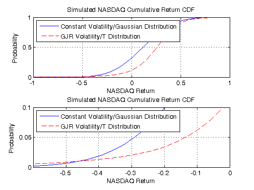

Distributed Value-at-Risk Simulation Using the File System
This demo uses the Parallel Computing Toolbox™ to assess the value at risk (VaR) of the NASDAQ Composite Index over a 12-month holding period. Additionally, the demo compares the simulation-based VaR results of two models of the NASDAQ returns.
We use the Monte Carlo simulation capabilities of the Econometrics Toolbox™ to estimate the VaR of the NASDAQ index. The first model of the NASDAQ index is the most traditional, and simply assumes a constant mean, constant volatility process with conditionally Gaussian returns. The second model also assumes a constant mean, but allows for time-varying volatility by fitting the NASDAQ series to a GJR model with conditionally t-distributed returns.
In this demo, we also show how we can use a shared file system to transmit data between the workers and the client.
For details about the value-at-risk model and the graphs that are generated, view the code for pctdemo_setup_garch.
Prerequisites:
Related demos:
Contents
Analyze the Sequential Problem
First, we look at how the computations in the sequential demo fit into the model introduced in the Dividing MATLAB Computations into Tasks demo. The main computations consist of a large number of simulations, and each simulation takes a fairly short amount of time. We therefore divide the computations into fairly few tasks, and have each task perform many simulations.
We notice that in the sequential demo, we never used two of the matrices returned by garchsim, and we only used the sum of the third matrix. Following the guidelines in the Minimizing Network Traffic demo, we therefore write a wrapper task function that returns only the data that we intend to use. Actually, the task function saves that data to the shared file system instead of explicitly returning it as the function output.
Load the Demo Settings and the Data
The demo uses the default configuration when identifying the scheduler to use. The configurations documentation explains how to create new configurations and how to change the default configuration. See Customizing the Settings for the Demos in the Parallel Computing Toolbox for instructions on how to change the demo difficulty level, the number of tasks created, or the directory shared between the workers and the client.
[difficulty, sched, numTasks, networkDir] = pctdemo_helper_getDefaults();
tasksPerModel = max(1, round(numTasks/2)); % We create tasks for 2 models.
We call the function pctdemo_setup_garch to perform all the initializations for this demo. The most important function output arguments are the time horizon, the number of simulations to perform, and both models to the NASDAQ index. The demo difficulty level determines the number of simulations we perform. You can view the code for pctdemo_setup_garch for full details.
[fig, constant, GJR, horizon, nPaths, eFit, sFit] = ...
pctdemo_setup_garch(difficulty);
startTime = clock;

Divide the Work into Smaller Tasks
The computationally intensive part of this demo consists of a Monte Carlo simulation. We divide the nPaths simulations among the tasksPerModel tasks.
[taskSims, tasksPerModel] = pctdemo_helper_split_scalar(nPaths, ... tasksPerModel); fprintf(['This demo will submit a job with %d task(s) ' ... 'to the scheduler.\n'], 2*tasksPerModel);
This demo will submit a job with 4 task(s) to the scheduler.
Create and Submit the Job
Let us create the simulation job and the tasks in the job. We intend to use the file system to send the data from the workers to the client. In this example, we assume that the directories in networkDir are shared with the workers.
job = createJob(sched);
We create tasks in the job, and let task i perform taskSims(i) simulations. We also pass along the names of the output files. You can view the code for pctdemo_task_garch_filedata for full details.
constName = cell(1, tasksPerModel); GJRName = cell(1, tasksPerModel); for i = 1:tasksPerModel [d, tmpfile] = fileparts(tempname); constName{i} = [tmpfile, '.mat']; fullFileName = pctdemo_helper_fullfile(networkDir, constName{i}); if exist(fullFileName, 'file') error('distcomp:demo:FileAlreadyExists', ... 'The file %s already exists', fullFileName); end createTask(job, @pctdemo_task_garch_filedata, 0, ... {constant, horizon, taskSims(i), ... networkDir, constName{i}}); end for i = 1:tasksPerModel [d, tmpfile] = fileparts(tempname); GJRName{i} = [tmpfile, '.mat']; fullFileName = pctdemo_helper_fullfile(networkDir, GJRName{i}); if exist(fullFileName, 'file') error('distcomp:demo:FileAlreadyExists', ... 'The file %s already exists', fullFileName); end createTask(job, @pctdemo_task_garch_filedata, 0, ... {GJR, horizon, taskSims(i), ... networkDir, GJRName{i}, eFit, sFit}); end
We can now submit the job and wait for the simulations to complete.
submit(job);
waitForState(job, 'finished');
Wait for the Results to be Available
Even though the workers have finished their computations and have finished saving the output files, it is quite possible that the files are not yet visible on the client. In extreme cases, more than a minute may pass between the time the workers write the output files and they are visible on the client, whereas this may be almost instantaneous on high-performance file systems. In order to work around these differences, we wait for up to one minute, polling the file system every five seconds to see if all the output files are available.
allFiles = [constName, GJRName]; waitTime = 5; % Wait for this many seconds between polling. maxTries = 13; % Poll at most this many times. numTries = 0; allFilesExist = false; while (numTries < maxTries && ~allFilesExist) allFilesExist = true; for i = 1:numel(allFiles) fullFileName = pctdemo_helper_fullfile(networkDir, allFiles{i}); allFilesExist = allFilesExist && exist(fullFileName, 'file'); end numTries = numTries + 1; if (~allFilesExist && numTries < maxTries) fprintf('Waiting for output files to become available.\n'); pause(waitTime); end end if ~allFilesExist fprintf(['Stopped waiting, even though some output files ' ... 'were not found.\n']); end
Retrieve the Results
We obtain the task results by reading the task output files, and we combine the results from the individual tasks into a single matrix.
constantCumReturns = zeros(1, nPaths); GJRCumReturns = zeros(1, nPaths); numConstResults = 0; numGJRResults = 0;
We know that task i performed taskSims(i) simulations, so its output vector should be of the length taskSims(i).
Note that we print a warning about any files not found.
endPos = 0; for i = 1:tasksPerModel startPos = endPos + 1; endPos = startPos + taskSims(i) - 1; fullFileName = pctdemo_helper_fullfile(networkDir, constName{i}); if ~exist(fullFileName, 'file') warning('distcomp:demo:FileNotFound', ... 'File %s not found', fullFileName); continue; end try constantCumReturns(startPos : endPos) = ... cell2mat(struct2cell(load(fullFileName))); numConstResults = numConstResults + 1; catch %#ok<CTCH> We don't need to store the MException. warning('distcomp:demo:FileReadFailure', ... 'Unable to read %s', fullFileName); end end endPos = 0; for i = 1:tasksPerModel startPos = endPos + 1; endPos = startPos + taskSims(i) - 1; fullFileName = pctdemo_helper_fullfile(networkDir, GJRName{i}); if ~exist(fullFileName, 'file') warning('distcomp:demo:FileNotFound', ... 'File %s not found', fullFileName); continue; end try GJRCumReturns(startPos : endPos) = ... cell2mat(struct2cell(load(fullFileName))); numGJRResults = numGJRResults + 1; catch %#ok<CTCH> We don't need to store the MException. warning('distcomp:demo:FileReadFailure', ... 'Unable to read %s', fullFileName); end end
Let us verify that all the tasks finished successfully and then destroy the job. We throw an error if we could not obtain any results, but display a warning if we got only some of the results.
if (numConstResults == 0 && numGJRResults == 0) taskErrorMsgs = pctdemo_helper_getUniqueErrors(job); destroy(job); error('distcomp:demo:EmptyJobOutput', ... ['Could not obtain any job results. The following error(s) ' ... 'occurred \nduring task execution:\n\n%s'], ... taskErrorMsgs); end if ~(numConstResults == tasksPerModel && numGJRResults == tasksPerModel) taskErrorMsgs = pctdemo_helper_getUniqueErrors(job); warning('distcomp:demo:IncompleteJobResults', ... ['Some tasks did not finish. Results were obtained for ' ... '%d out of %d tasks \nusing the constant model ' ... 'and %d out of %d tasks using the GJR model. \n' ... 'The following error(s) ' ... 'occurred during task execution:\n\n%s'], ... numConstResults, tasksPerModel, ... numGJRResults, tasksPerModel, taskErrorMsgs); end
We have now finished all the verifications, so we can destroy the job.
destroy(job);
Clean up the File System
We were careful to keep track of all the temporary files that we created, and now it is time to remove them.
for i = 1:numel(allFiles) fullFileName = pctdemo_helper_fullfile(networkDir, allFiles{i}); if exist(fullFileName, 'file') delete(fullFileName); end end
Measure the Elapsed Time
The time used for the distributed computations should be compared against the time it takes to perform the same set of calculations in the Sequential Value-at-Risk Simulation demo. The elapsed time varies with the underlying hardware and network infrastructure.
elapsedTime = etime(clock, startTime);
fprintf('Elapsed time is %2.1f seconds\n', elapsedTime);
Elapsed time is 14.1 seconds
Plot the Results
The first plot illustrates the entire cumulative distribution function. The second plot highlights the lower tail of the distributions, corresponding to portfolio losses, and allows us to compare the predicted value at risk at the high confidence levels, that is at low levels of probability. You can view the code for pctdemo_plot_garch for full details.
pctdemo_plot_garch(fig, constantCumReturns, GJRCumReturns);